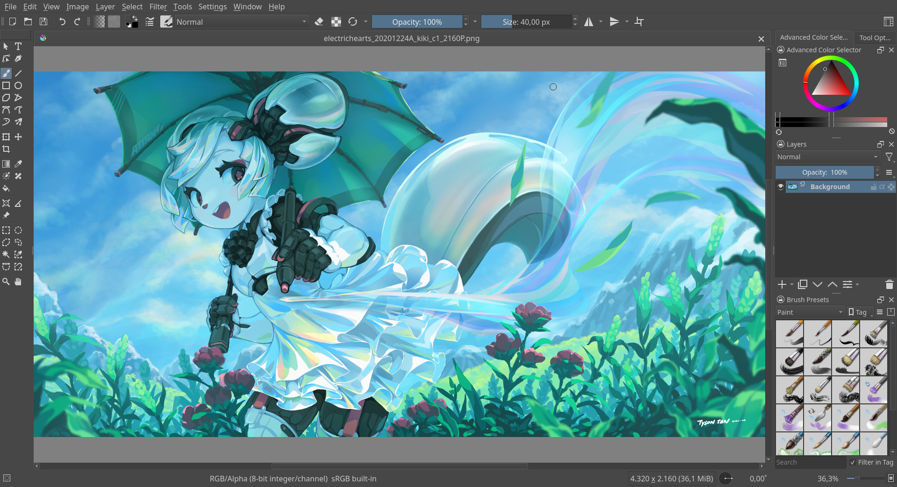
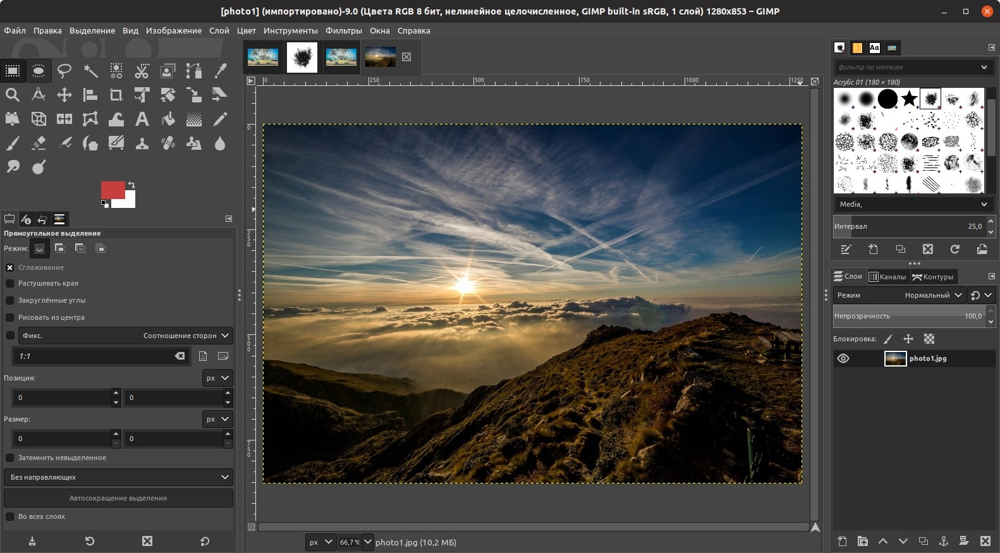
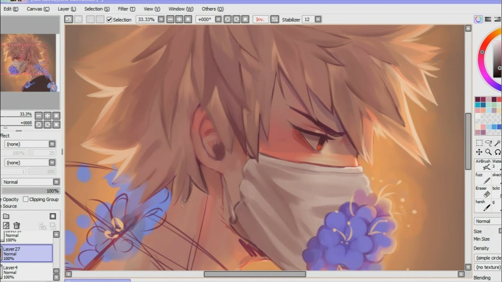
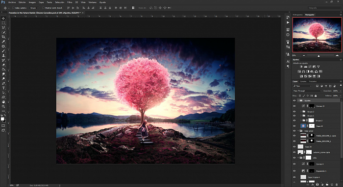

Krita
Krita — полнофункциональный инструмент для создания цифровой графики.
Она превосходно подходит для набросков и рисования, предоставляя мастерам самодостаточный инструмент для создания цифровой живописи с нуля.
Krita — отличный выбор для создания концепт-артов, комиксов, текстур для рендеринга и рисования. Она поддерживает множество цветовых пространств включая RGB и CMYK с 8 и 16 целыми битами на канал, а также 16 и 32 битами с плавающей запятой на канал.
Krita имеет приятный и удобный интерфейс, она подходит для художников, которые хотят перейти с работы в PaintTool SAI в Adobe Photoshop. Она выделяется интересным дизайном иконок кистей, которых тут немало, и которые можно скачать дополнительно.
Gimp
GIMP, сокращенно от GNU Image Manipulation Program - имя мощного и хорошо известного бесплатного редактора изображений, который предоставляет вам множество инструментов для решения задачи по качественной обработке изображений.GIMP приобретает все большую популярность, благодаря мощным функциям редактора и, конечно же, благодаря его полной бесплатности.
Следует подчеркнуть возможность гибкой настройки программы под свой стиль работы. Программу часто называют бесплатной версией Adobe Photoshop. GIMP включает множество функций, которые до настоящего времени были достоянием лишь очень дорогих программ. Итак, сейчас они бесплатны, и пришло время начать ими пользоваться.
Paint Tool SAI
Paint Tool Sai — это популярная среди художников программа для рисования аниме и манга.В архив, кроме полной версии (без триала), добавлены дополнительные кисти и текстуры.Свежая версия (обновление 12.01.2020) — это техническое превью, без возможности сохранить рисунок. Лишь для ознакомления.
В Sai очень большое разнообразие параметров, по которым можно настроить кисти. Можно скачать уже готовые из архива, в интернете многие делятся настройками своих кистей, так как художников, которых не порадует новая кисть, найти очень трудно. В слоях есть специальная настройка с векторным слоем.
Photoshop
Adobe Photoshop — многофункциональный графический редактор, разрабатываемый и распространяемый компанией Adobe Systems. В основном работает с растровыми изображениями, однако имеет некоторые векторные инструменты.
Хотя изначально программа была разработана как редактор изображений для полиграфии, в данное время она широко используется и в веб-дизайне. Программа включает в себя пакеты инструментов и функций, для обработки различных фотографий, которые используются и для рисования.
